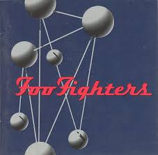

I have been a music lover since I was a small child. I loved classic rock and rock n' roll since it was the first kind of music I was introduced to. Since then my music taste has expanded to all genres. I have learned to appreciate and love all kinds of music for their similarities and differences.
Music is something for everyone to enjoy and experience. I believe that music is a way for people to express themselves when words can't do it for them. Music is a way for people to connect and to learn more about each other.
Sometimes people can get into a rut with music. I think that if people were more open-minded to trying different kinds of music they would fall in love with music just as I have.
Here are a few genre suggestions with a few songs from each listed here:
- Rock n' Roll
- "Stuck in the Middle With You" by Steelers Wheel
- "People Are Strange" by The Doors
- "Feelin' Alright" by Joe Cocker
- "Little Martha" by Allman Brothers Band
- "Golden Slumbers" by The Beatles
- Alternative Rock
- "Walk" by Foo Fighters
- "The Man Who Stole the World" by Nirvana (originally by David Bowie)
- "Monkey Wrench" by Foo Fighters
- "Sunday Bloody Sunday" by U2
- Jazz
- "What a Wonderful World" by Louis Armstrong
- "Blue and Sentimental" Oscar Peterson
- "Fly Me to the Moon" by Frank Sinatra
- "Scrapple from the Apple" by Charlie Parker
- Other Random Suggestions
- "Officially Missing You" by Tamia
- "A-Punk" by Vampire Weekend
- "Wannabe" by The Spicegirls
- "Married Life" by Michael Giacchino (score from Up)
Sites where you can listen to these songs: